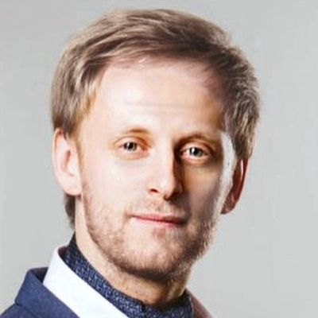

Head of PMO · IT Governance · CIO-1
Денис ИвановDenis Ivanov
Делаю ИТ управляемым: портфель, бюджет и сроки — под контролем Правления I make IT governable: portfolio, budget and delivery under Board-level control
Строю проектные офисы и системы управления ИТ-портфелем в крупных банках и корпорациях. Бизнес получает больше изменений в срок, Правление — прозрачный ИТ-бюджет и понятные решения. I build project management offices and IT portfolio governance in large banks and corporations. The business gets more change delivered on time; the Board gets a transparent IT budget and clear decisions.
Чем я полезенHow I help
Узнаёте свою ситуацию? С этим я и прихожуSound familiar? This is what I fix
Четыре типовые задачи, с которыми ко мне приходят банки и крупные компании, и результат, который я уже достигал. Four typical challenges banks and large companies bring to me — and results I have already delivered.
ИТ не успевает за бизнесом?IT can’t keep up with the business?
Выстраиваю единый вход спроса, прозрачные правила приоритизации и квартальное планирование команд. Бизнес знает, что и когда получит. I set up a single demand intake, transparent prioritisation rules and quarterly team planning. The business knows what it gets and when.
Бюджет ИТ растёт, а отдача неочевидна?IT budget keeps growing, but the return is unclear?
Делаю ИТ-бюджет прозрачным: CAPEX/OPEX, план-факт, связь каждого рубля с портфелем. Готовлю решения для Правления и Наблюдательного совета. I make the IT budget transparent: CAPEX/OPEX, plan vs actual, every rouble tied to the portfolio. I prepare decisions for the Management and Supervisory Boards.
Проекты сдвигаются, портфель не прозрачен?Projects slip and the portfolio is opaque?
Строю проектный офис: методология, ритм портфельных комитетов, дашборды для топ-менеджмента, команда сильных руководителей проектов. I build the PMO: methodology, portfolio committee cadence, executive dashboards and a strong team of project managers.
Трансформация буксует?Transformation stalling?
Перевожу ИТ на кросс-функциональные команды и гибридную модель управления, не останавливая текущий портфель. I move IT to cross-functional teams and a hybrid operating model without stopping the running portfolio.
КейсыCase studies
Как это было на практикеHow it worked in practice
Нажмите на карточку, чтобы увидеть ситуацию, что я сделал и к какому результату это привело. Click a card to see the situation, what I did and the result.
×3,5×3.5 Проектный офис ИТ с нуляAn IT PMO from scratch Банк, ИТ-блок 450 человекBank, 450-strong IT unit ПодробнееDetails
90% Портфель, которому снова верятA portfolio people trust again Банк, 30–40 проектовBank, 30–40 projects ПодробнееDetails
350 Agile-трансформация ИТ на месяц раньше планаIT Agile transformation a month early Банк международной группыBank within an international group ПодробнееDetails
$83M ИТ-бюджет, понятный ПравлениюAn IT budget the Board understands Банк, бюджет 2027 годаBank, 2027 budget ПодробнееDetails
Первые 90 днейFirst 90 days
Что я сделаю в первые 90 днейWhat I do in my first 90 days
Мой рабочий план на старте новой роли. Нажмите на шаг, чтобы раскрыть детали. My working plan for a new role. Click a step to see the details.
1ДиагностикаDiagnoseдни 1–30days 1–30 ДеталиDetails
- Разбираю портфель, бюджет и очередь изменений: что идёт, сколько стоит, что застряло
- Интервью с бизнес-заказчиками, ИТ и финансами
- Карта проблем и список быстрых побед — согласую с руководителем
- Review the portfolio, budget and change queue: what runs, what it costs, what is stuck
- Interviews with business owners, IT and finance
- A problem map and a list of quick wins, agreed with my manager
2Быстрые победыQuick winsдни 31–60days 31–60 ДеталиDetails
- Единая точка входа спроса и понятные правила приоритизации
- Первый портфельный комитет с решениями, а не статусами
- Дашборд для топ-менеджмента: портфель, бюджет, сроки на одном экране
- A single demand intake and clear prioritisation rules
- The first portfolio committee that takes decisions, not just status updates
- An executive dashboard: portfolio, budget and timelines on one screen
3СистемаMake it stickдни 61–90days 61–90 ДеталиDetails
- Методология и регламенты, утверждённые руководством
- Квартальное планирование команд и бюджетный цикл CAPEX/OPEX
- KPI проектного офиса и план развития команды
- Methodology and policies approved by management
- Quarterly team planning and a CAPEX/OPEX budget cycle
- PMO KPIs and a team development plan
ОпытExperience
Где я это делалWhere I have done it
Главный результат на каждом месте работы. Подробности — по клику. The key result at each employer. Click for details.
Хамкорбанк (Узбекистан)Hamkorbank (Uzbekistan) Руководитель проектного офиса ИТHead of IT PMO 2023 — н.в.2023 — present ПодробнееDetails Объём изменений, поставляемых по плану, — ×3,5; ИТ-бюджет $83M + ФОТ.Change delivered on plan up 3.5×; IT budget of $83M + payroll.
- Построил проектный офис ИТ с нуля; готовлю решения по ИТ-портфелю и бюджету для комитета по стратегии, Правления и Наблюдательного совета.
- Методология приоритизации изменений, утверждённая Правлением: объём плановой реализации ×3,5; квартальные планы 24 команд (180–200 чел.) выполняются в срок.
- Бюджет ИТ на 2027 год — $83 млн + ФОТ; внедрил CAPEX/OPEX, провёл 3 бюджетных цикла; портфель ИТ-стратегии совместно с KPMG.
- Built the IT PMO from scratch; prepare IT portfolio and budget decisions for the Strategy Committee, Management Board and Supervisory Board.
- Board-approved change prioritisation methodology: planned delivery up 3.5×; quarterly plans of 24 teams (180–200 people) delivered on time.
- 2027 IT budget of $83M + payroll; introduced CAPEX/OPEX, ran 3 budget cycles; IT strategy portfolio together with KPMG.
Ренессанс КредитRenaissance Credit Bank Руководитель проектного офисаHead of PMO 2023 ПодробнееDetails Доля проектов в срок — с 60% до 90%.On-time projects from 60% to 90%.
- Портфель 30–40 проектов, команда из 12 руководителей проектов.
- Доля проектов в срок выросла с 60% до 90%; запросов на допфинансирование на 85% меньше; задач, выпадающих из релизов, на 20% меньше.
- Portfolio of 30–40 projects, team of 12 project managers.
- On-time projects rose from 60% to 90%; 85% fewer extra funding requests; 20% fewer tasks dropped from releases.
РосгосстрахRosgosstrakh (insurance) Начальник управления цифровой трансформацииHead of Digital Transformation 2021 — 2022 ПодробнееDetails Продукт на рынке за 1 месяц вместо 3–6.Product to market in 1 month instead of 3–6.
- За квартал запустил 4 продуктовые команды; первый продукт выведен на рынок за 1 месяц вместо 3–6.
- Launched 4 product teams in one quarter; first product brought to market in 1 month instead of 3–6.
Правительство Москвы (ДИТ)Moscow Government IT Department Руководитель проектного офиса продукта «Электронный дом»Head of PMO, “Electronic House” city platform 2020 — 2021 ПодробнееDetails Аудитория с 5 тыс. до 500 тыс. за 5 месяцев.Users from 5K to 500K in 5 months.
- Масштабирование с пилота на всю Москву за 2 месяца; аудитория с 5 тыс. до 500 тыс. пользователей за 5 месяцев.
- Число внедряемых изменений ×2,5; в период COVID-19 — система поиска медперсонала, позволившая открыть 2 госпиталя за месяц.
- Scaled from pilot to all of Moscow in 2 months; users grew from 5K to 500K in 5 months.
- Change throughput 2.5×; during COVID-19 delivered a medical staffing system that enabled 2 hospitals to open within a month.
ОТП БанкOTP Bank Russia (OTP Group) Начальник управления «Проектный офис ИТ»Head of IT PMO 2019 — 2020 ПодробнееDetails Agile-трансформация 350 человек на месяц раньше плана.Agile transformation of 350 people a month early.
- Agile-трансформация ИТ: 350 сотрудников, 16 команд, завершена на месяц раньше плана.
- Портфель 35–40 проектов (≈$40 млн) в зелёной зоне; бэклог ИТ-стратегии совместно с McKinsey; отчётность для головного офиса OTP Group.
- IT Agile transformation: 350 people, 16 teams, completed a month ahead of plan.
- Portfolio of 35–40 projects (~$40M) in the green zone; IT strategy backlog with McKinsey; reporting to OTP Group HQ.
Первая Экспедиционная Компания (ПЭК)PEK (logistics) Руководитель проектного офиса / заместитель директора по ИТHead of PMO / Deputy IT Director 2018 — 2019 ПодробнееDetails Онлайн-заказы ×3–4; крупных внедрений вдвое больше.Online orders 3–4×; twice as many major roll-outs.
- PMO с нуля и проектный комитет с акционерами; внедрений крупных проектов вдвое больше.
- Новые сайт и мобильное приложение: онлайн-заказы ×3–4, нагрузка на контакт-центр −20%.
- PMO from scratch and a project committee with shareholders; twice as many major projects delivered.
- New website and mobile app: online orders 3–4×, contact-centre load −20%.
СберSber Старший ИТ-бизнес-партнёр (CTO направлений контакт-центров, бэк-офиса и андеррайтинга)Senior IT Business Partner (CTO for contact centres, back office and underwriting) 2012 — 2018 ПодробнееDetails 100% проектов в срок в портфеле до 1,8 млрд ₽ в год.100% of projects on time in a portfolio of up to RUB 1.8bn a year.
- Портфель с бюджетом до 1,8 млрд ₽ в год, 100% проектов в срок; новая площадка контакт-центра запущена за 6 месяцев.
- Portfolio of up to RUB 1.8bn a year, 100% of projects on time; a new contact-centre site launched in 6 months.
Citibank · GE Money Bank Старший руководитель проектов (ИТ)Senior IT Project Manager 2005 — 2011 ПодробнееDetails Награда Citigroup за безынцидентную миграцию IVR-платформы.Citigroup award for a zero-incident IVR platform migration.
- Citibank (2005–2010): безынцидентный перевод России на новую IVR-платформу в глобальной программе Citigroup — награда Citigroup.
- GE Money Bank (2010–2011): старший руководитель проектов.
- Citibank (2005–2010): zero-incident migration of Russia to the new IVR platform within a global Citigroup programme — Citigroup award.
- GE Money Bank (2010–2011): Senior Project Manager.
Образование и языкиEducation & languages
ОбразованиеEducation
- Российский государственный социальный университет, 2005
Автоматизированные системы обработки информации и управления - Sbergile — стандарты Agile-трансформации, 2017
- Управление проектами по стандартам PMI, 2011
- Russian State Social University, 2005
Automated Information Processing and Control Systems - Sbergile — Agile transformation standards, 2017
- Project management to PMI standards, 2011
ЯзыкиLanguages
- Русский — родной
- Английский — B2; 5 лет работы в международных командах Citigroup
- Russian — native
- English — B2; 5 years in global Citigroup teams